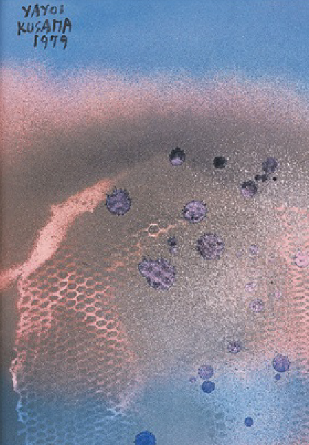
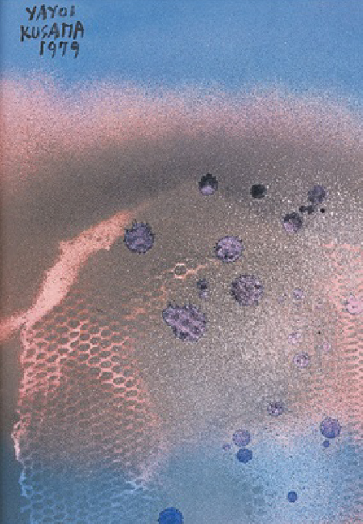

For the exhibition, our curators are creating an interrelated series of installations in the three floors of the MoSA.
Our guest artist for this exhibition is Yayoi Kusama. A Japanese multi-media artist known for her immersive installations.
Current exhibition:
RAIN
may 20-august 13
experience ittoday
Thursday, June 2nd
Galleries
10:30 am–6 pm
Shop
10:30 am–6 pm
Studio Cafe
11 am–5 pm
MONDAY 10:30 am–6 pm
TUESDAY Closed
WEDNESDAY - THURSDAY 10:30 am–6 pm
FRIDAY - SATURDAY 10:30 am–10 pm
SUNDAY 10:30 am–6 pm
The Museum of Sensory Art was founded in the year 2016 with the objective of creating experiences that will make people engage in all ways and from all senses possible. With each exhibition we ask an artist to create an installation in the first room of the exhibiton, to submerge people into the experience. The exhibition is based on the subject matter of the artwork, not by artist or art period. Our curators aim at putting together the most diverse collection possible, to see how that subject matter was interpreted by different epochs and artists. The MoSA is characterized by having a range of different disciplines, and by incorporating new with every new exhibition.

© 2016 Museum of Sensory Art